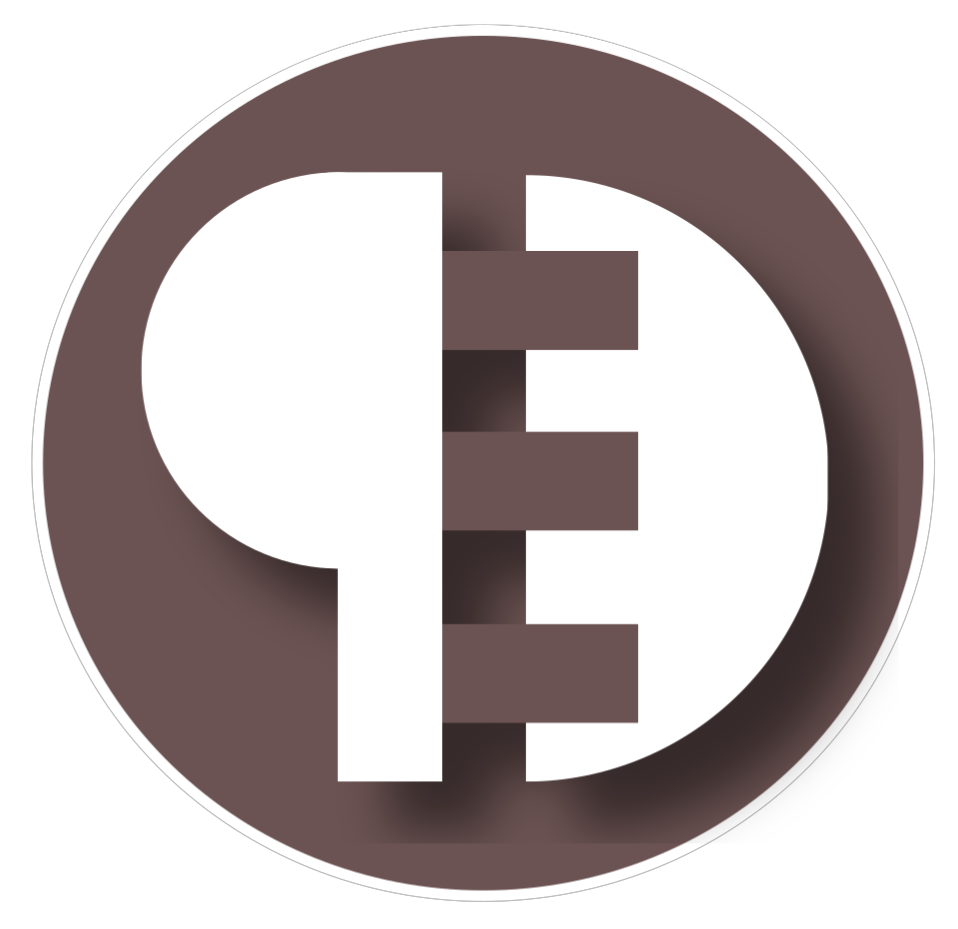

Papeled MakerEspaço maker online
Sua ideia
ganha forma.
Uma apresentação de 32 segundos, com produtos do configurador, movimento, textos e trilha instrumental original.
Vertical · 1080 × 1920 · MP4 · 30 fps
Textos na tela, sem locução.

Legenda pronta para sua postagem
Baixar texto e título sugeridoBaixe o MP4 e publique como Reels ou Short. No Instagram, use o endereço do site na bio. A trilha já faz parte do vídeo.